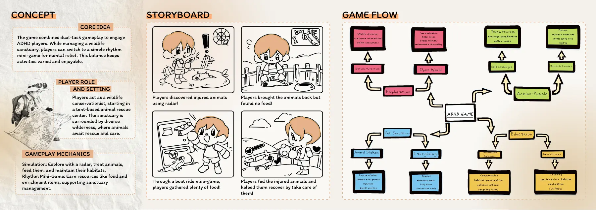
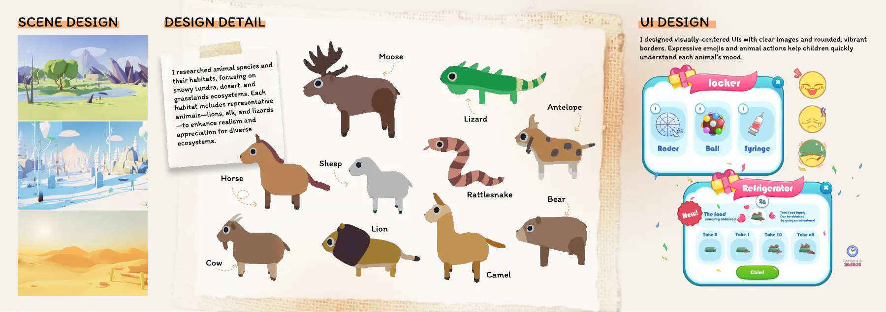
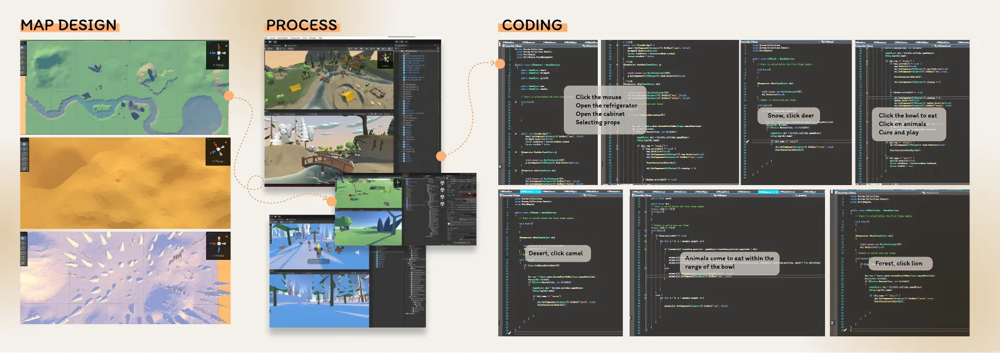

Brief
The goal was a game with clear goals that lets players switch between activities whenever they want, designed with ADHD players in mind. It's a UX and game design exploration and makes no clinical claims.
Research and process
- Read research on ADHD and reviewed questionnaire material to set two design principles: clear goals and flexible task switching.
- Designed two modes: a wildlife-rescue simulation where players find, treat, feed and house injured animals, and a boat-rhythm mini-game for collecting resources.
- Drew storyboards and a game flow, then designed the habitats, animal characters and UI.
- Built the scenes and wrote the code for a working visual prototype.
Portfolio pages





